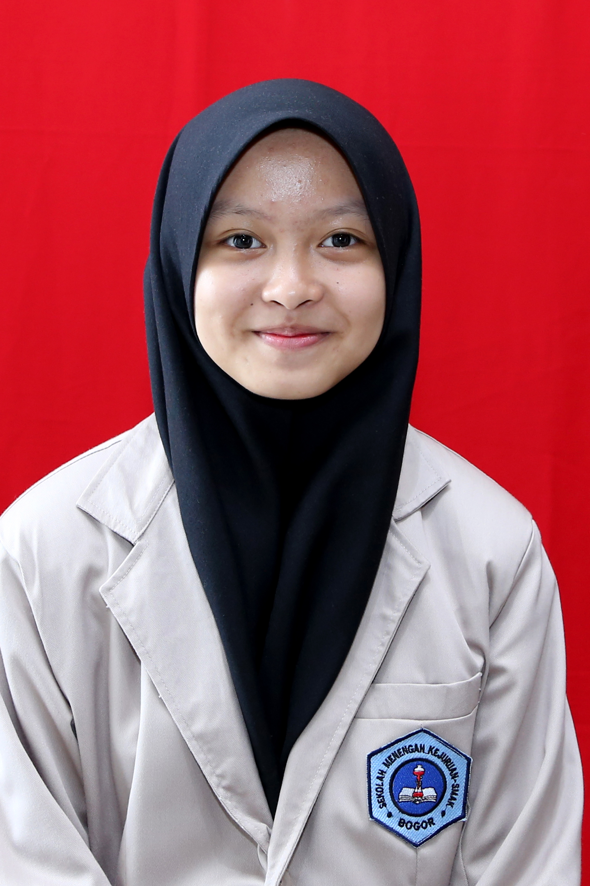

selamat datang disitus pribadi akuu, salam kenal semua!! sebelum kita ke topik utama kita kenalan lebih lanjut yuk!
| Nama Depan | Nama Akhir | Umur |
|---|---|---|
| Annisa Rizki | Fathonah | 16 Tahun |
Topik yang ingin saya bahas kali ini adalah pengalaman mengikuti pembelajaran jarak jauh ketika COVID-19. Simak baik baik yuk!
Menjelang PORSIP 2020 saya dan teman-teman saya sudah tidak sabar untuk mengikutinya, karena ini adalah PORSIP pertama kami. Banyak dari kami yang sudah mempersiapkan untuk menampilkan yang terbaik. Ada yang mengikuti lomba teater, lomba basket, lomba futsal dan lain-lain. Termasuk saya, saya mengikuti kepanitiaan PORSIP sebagai anggota Keamanan Logistik (KELOG) saya senang sekali bisa masuk dalam panitia PORSIP 2020. Tetapi sebelum melaksanakan PORSIP kita para siswa harus mengikuti Penilaian Tengah Semester (PTS) terlebih dahulu. PTS ini dilaksanakan selama seminggu,dan siswa diberi waktu libur seminggu sebelum mengikuti PTS ini. Kami siswa sangat senang ketika ada pemberitahuan libur satu minggu, kami bisa beristirahat dan mempersiapkan sebelum PTS dimulai. Di waktu yang sama muncul kasus COVID-19 yang pertama di Indonesia, pemerintah mengharuskan kita lockdown di rumah. Saat itu saya berfikir bahwa ini hanya berlangsung seminggu, ternyata tidak. PTS yang harusnya dilakukakn disekolah terpaksa dilaksanakan secara online dan rencana PORSIP 2020 harus ditunda.
Semasa awal lockdown saya sangat senang karena bisa sekolah dari rumah, saya juga bisa banyak beristirahat. Saya bisa menghabiskan banyak waktu dirumah dengan keluarga dan pada saat itu juga bulan ramadan datang. Saya sedikit sedih karena ramadannya berbeda dengan tahun lalu, saya tidak bisa tarawih di Masjid. Setelah lebaran saya harus naik kelas dan mengikuti pembelajaran online. Saya merasa kesulitan beradaptasi dengan materi baru ketika pembelajaran offline. Banyak pembelajaran yang saya kurang faham, ditambah tugas yang banyak. Pada saat itu saya benar benar kehilangan motivasi belajar. Saat itu saya merasa tidak ada yang mengerti saya, bahkan keluarga sekalipun. Saya merasa sungkan memberi tahu teman saya bahwa saya sedang kesusahan dalam belajar. Saya sudah coba berbagai cara agar kembali bersemangat,tetapi hasil nya nihil saya tetap tidak serius dalam belajar.Saya tidak mementingkan nilai pada saat itu,yang penting semua tugas selesai. Jadwal tidur tidak teratur, hilang nafsu makan, dan sering marah marah itulah yang saya alami ketika pembelajran jarak jauh. Pada tahap terbosan saya, grup favorit saya meluncurkan album baru. Baru lah pada saat itu saya merasa ada harapan untuk bersemangat. Saya yang awalnya tidak berharap pagi cepat tiba, menjadi sangat menunggu hari esok. Perlahan saya mulai beradaptasi dengan pembelajaran online, saya mulai menghubungi teman teman saya dan memulai hobi baru. Hobi baru saya adalah melukis. Saat itu saya menyadari bahwa yang bosan dalam pembelajaran online bukan hanya saya saja, tetapi teman-teman dan guru saya pun begitu. Banyak hal yang tidak saya senangi di pembelajran jarak jauh, tetapi ada juga hal hal yang menyenangkan seperti tidak usah repot memakai seragam yang full dan banyak keringanan. Tetapi saya tetap memilih sekolah offline karena walaupun cape, saya masih bisa berkomunikasi dengan teman teman. Saya berharap pembelajaran jarak jauh cepat selesai.
Segitu dulu ya cerita nyaa,,, udah malem disini nanti kita ketemu dicerita selanjutnya bye byee!!